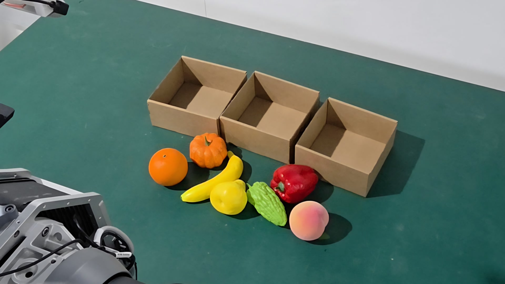
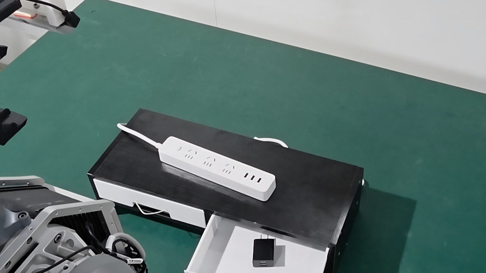
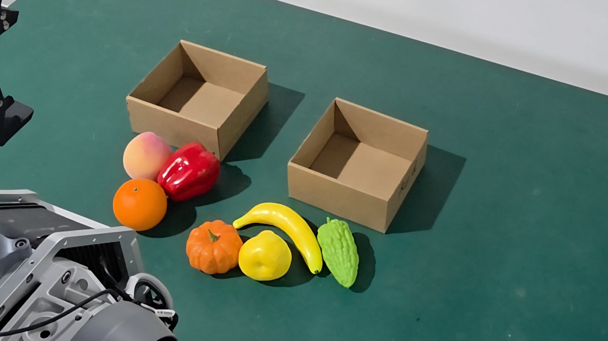
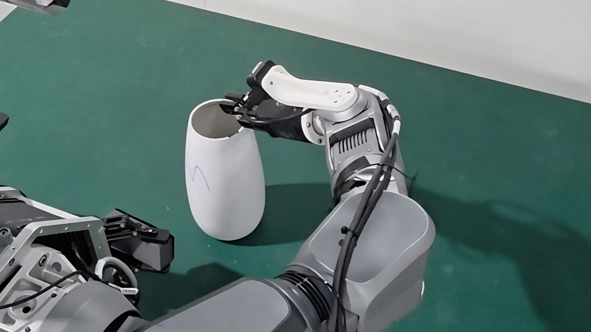

(a)
Vision-free grounding
Language and proprioception bind each atom to measured motion, not scene appearance.
Dual-arm manipulation · language + force
A geometry-grounded, per-arm motion interface that makes VLA policies easier to redirect with language—and revise with contact.
force update
zFbounded · non-accumulatingA named coordinate keeps the semantic motion anchor visible while visual context and contact determine its realization.
Can changing only an instruction redirect a visually driven motion prior?
AMC grounds the answer in measured robot geometry.Method
The coordinate is learned without visual input from an atomic instruction, robot state, and forward-kinematics supervision. Under full observation, it conditions every action-expert block through an independent residual route.
Language and proprioception bind each atom to measured motion, not scene appearance.

Vision shapes scene-specific detail; contact updates only the unexecuted suffix.
Evidence
Steering is assessed separately from closed-loop task progress and contact adaptation—so language sensitivity is not confused with a motion prior or hardware execution.
Single-atom pair separation
92.5%vs. 39.1% LA4VLA-styleDual-atom pair separation
83.1%vs. 24.0% LA4VLA-styleOOD fruit task progress
87.8%vs. 60.5% fine-tuned π0.5Plug task progress with force
78.5%vs. 59.0% force-free AMCImages, state, normalization, sampler, and flow noise are held fixed as the atomic prompt changes.
Tasks
From object and destination-specific fruit subtasks to contact-rich insertion and bilateral wiping.




Four-task comparison
The reel compares task execution across fruit, OOD fruit ordering, plug insertion, and vase wiping.